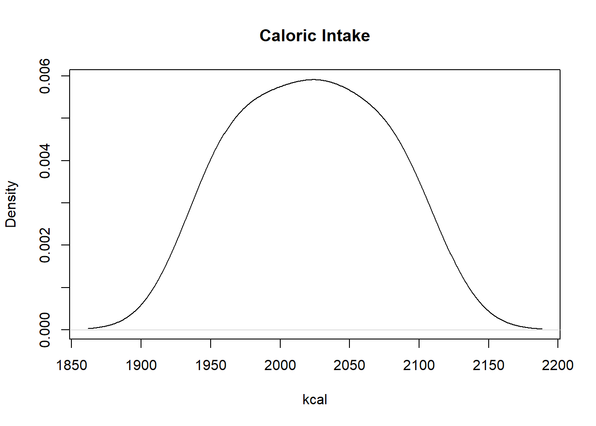
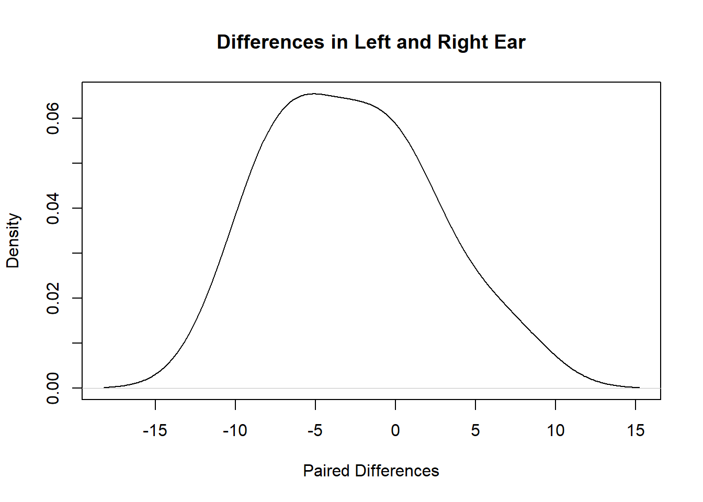
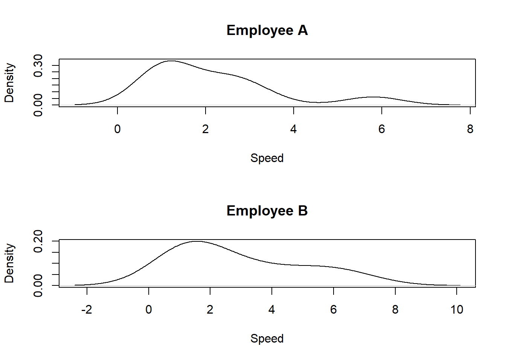

17 Non-Parametric Tests for Quantitative Data
17.1 Introduction
In general, non-parametric, quantitative hypothesis tests do not require knowledge of the sampling distribution of the relevant test statistic. These are unlike the hypothesis tests in Section 14 which require knowledge of the sampling distribution of the relevant test statistic.
Instead, each sampled data point is given a sign and/or a rank and these are used to make determinations. All of these particular hypothesis tests assume that the data are sampled from continuous distributions and test the median of the distribution or the difference of two medians.
The specific non-parametric tests we will be learning about are:
- Sign test (analogous to 1-sample t test).
- Wilcoxon sign-rank test (analogous to 1-sample t test).
- Wilcoxon rank-sum test (analogous to 2-sample t test).
17.2 Sign Test
The sign test enables users to draw conclusions regarding the median of a continuous distribution. Like the parametric tests, the null hypothesis will be assumed true throughout the test.
17.2.1 Hypotheses
For this test, the null hypothesis is that the population median (M) is equal to the null value (m). The alternative hypothesis can be either two-sided, greater than, or less than. The three possible sets of hypotheses are:
- \(H_0: M = m, H_a: M > m\).
- \(H_0: M = m, H_a: M < m\).
- \(H_0: M = m, H_a: M \neq m\).
17.2.2 Test Statistic
Since the median is the center of the data, the number of data points above and below the true value of the median should be (roughly) equal. Since the null hypothesis is assumed to be true, the null value is assumed to be the center of the data.
We compare each value in the data with the assumed value of the median in the null hypothesis. The test statistic is the number of data points greater than the null value. We denote the value of the test statistic with \(v\).
17.2.3 Distribution of Test Statistic
If the null hypothesis is true, we would expect half the data points to be greater than the null value. The number of data points greater than the null value can be denoted by \(X\), and \(X\) follows a binomial distribution with the sample size as the number of trials and 0.5 as the probability of success.
17.2.4 P-Value
The p-value is found by determining the probability of obtaining a test statistic at least as extreme as the one found in the same direction as the test.
- For a greater than alternative hypothesis, this is \(P(X \geq v)\).
- For a less than alternative hypothesis, this is \(P(X \leq v)\).
- For a two-sided alternative, we double the smaller of \(P(X \geq v)\) and \(P(X \leq v)\).
The p-value can be found by using the pbinom() function or by using the binom.test() function.
17.2.5 Worked Example 1
Consider the sample data below drawn from a cell phone record that represent the number of minutes spent per call. Is there evidence that the median call length is less than 5 minutes?
\(H_0: M = 5, H_a: M < 5\).
## Sampled data
calls1 <- c(2,1,3,3,3,3,1,3,16,2,2,12,20,3,1)
## Determine test statistic
v <- sum(calls1 > 5)
v## [1] 3
## Determine sample size
n <- length(calls1)
## Determine p-value
binom.test(v, n, alternative="less")##
## Exact binomial test
##
## data: v and n
## number of successes = 3, number of trials = 15, p-value = 0.01758
## alternative hypothesis: true probability of success is less than 0.5
## 95 percent confidence interval:
## 0.0000000 0.4397844
## sample estimates:
## probability of success
## 0.2
## Compare p-value with
pbinom(v, n, 0.5)## [1] 0.01757813The value of the test statistic is 3, in other words, there are 3 calls longer than 5 minutes in our sample of 15 calls.
So we reject the null hypothesis as the p-value is 0.018, which is less than 0.05. Our data provides evidence that the median call length is less than 5 minutes.
17.2.6 Worked Example 2
Consider the sample data drawn from another user’s cell phone record. Is there evidence that the median call length is more than 30 minutes?
\(H_0: M = 30, H_a: M > 30\).
## [1] 10
## Determine sample size
n2 <- length(calls2)
## Determine p-value
binom.test(v2, n2, alternative="greater")##
## Exact binomial test
##
## data: v2 and n2
## number of successes = 10, number of trials = 15, p-value = 0.1509
## alternative hypothesis: true probability of success is greater than 0.5
## 95 percent confidence interval:
## 0.4225563 1.0000000
## sample estimates:
## probability of success
## 0.6666667
## Compare p-value with
1 - pbinom(v2 - 1, n2, 0.5)## [1] 0.1508789
## or
pbinom(v2 - 1, n2, 0.5, lower.tail = FALSE)## [1] 0.1508789The value of the test statistic is 10. So there are 10 calls longer than 30 minutes.
We fail to reject the null hypothesis as our p-value is 0.15, which is greater than 0.05. The sample does not provide evidence that the median length of call is greater than 30 minutes.
17.2.7 Worked Example 3
Consider the sample data drawn from the second user’s cell phone record. Is there evidence that the median call length is different from 25 minutes?
v3 <- sum(calls2 > 25)
v3## [1] 11
## Determine p-value
binom.test(v3, n2, alternative="two.sided")##
## Exact binomial test
##
## data: v3 and n2
## number of successes = 11, number of trials = 15, p-value = 0.1185
## alternative hypothesis: true probability of success is not equal to 0.5
## 95 percent confidence interval:
## 0.4489968 0.9221285
## sample estimates:
## probability of success
## 0.7333333
## Compare with
2*(1 - pbinom(v3 - 1, 15, 0.5))## [1] 0.1184692We fail to reject the null hypothesis since the p-value is 0.19, which is greater than 0.05. Our sample does not support the claim that the median length of calls is different from 25 minutes.
17.2.8 Final Comments
Notice the only assumption for the sign test is that the data should be continuous. The classical 1-sample t-test has more assumptions (data are i.i.d. normal or sample size is large enough).
So the sign test can be used in a wider variety of settings. However, when the assumptions for the 1-sample t-test are met, the 1-sample t-test is more powerful.
The sign test is also conservative.
17.3 Wilcoxon Sign-Rank Test
17.3.1 Test Statistic
The Wilcoxon sign-rank test is another way to test the median of a continuous distribution and uses the same hypotheses as the sign test. It has one additional assumption that the distribution be symmetric.
The Wilcoxon sign-rank test works in a similar way to the sign test. Instead of each value being compared directly to the null value:
First, the null value is subtracted from each sampled value, which will yield a positive difference if the sampled value is above the assumed median and a negative difference if the sampled value is below the assumed median. Any observation with a difference of 0 is discarded.
Next, the absolute values of the differences are ranked and any tied values receive a rank that is the average of the would-be ranks of all the tied values.
Finally, the ranks of the positive differences are summed to find the value of the test statistic, denoted by \(w\).
17.3.2 P-Value
The p-value is found in one of two ways: exactly or approximately.
17.3.2.1 Exact P-Value
Consider all possible combinations of positive and negative differences in step 2, and calculate the value of the test statistic for each combination.
The p-value is the proportion of combination of test statistics that are at least as large as the calculated test statistic in step 3.
The exact method is used when the sample size is small.
17.3.2.2 Approximate P-Value
The approximate method is used when the sample size is large, since the number of combinations needed for the exact method grows exponentially with sample size \((2^n)\) and can get computationally expensive. Other scenarios where the approximate method should be used is when tied ranks exist, or if a data point has a value exactly equal to the null value.
The approximate method uses a normal approximation for the distribution of the test statistic. When the approximation method is used, users have the option to include a continuity correction to adjust the integer-based test statistics to the continuous normal scale. It is recommended to use the continuity correction, unless the sample size is really large. The continuity correction is usually a bit more conservative.
17.3.2.3 Using R
The function wilcox.test() will conduct the Wilcoxon Sign-Rank test. The required arguments are the sampled data, the null value of the median (via the argument mu), and the alternative hypothesis. Users can also specify whether to generate the exact p-value and whether to ignore the continuity correction.
17.3.3 Worked Example
We have data from 10 adults and their daily caloric intake. We want to assess if the median daily caloric intake is different from 2000 kcal.
\(H_0: M = 2000, H_a: M \neq 2000\).
caloric_intake <- c(1950, 2020, 2100, 1985, 2040, 1990, 2070, 2030, 1955, 2080)
## check is data looks symmetric.
## Symmetry needed for Wilcoxon Rank Sign Test
## Otherwise use Sign Test
plot(density(caloric_intake), main ="Caloric Intake", xlab = "kcal")
Figure 17.1: Density Plot of Caloric Intake
## OK. Somewhat symmetric
## sample size 10
## no tied tanks. Function will display a message if they exist
## no value equal to null. Function will display a message if they exist
wilcox.test(caloric_intake, mu = 2000, alternative = "two.sided")##
## Wilcoxon signed rank exact test
##
## data: caloric_intake
## V = 39, p-value = 0.2754
## alternative hypothesis: true location is not equal to 2000We note from the density plot that the data is symmetric, so we can use the Wilcoxon Sign-Rank test. The p-value is 0.2754 which is greater than 0.05, so we fail to reject the null hypothesis. The sample does not provide evidence that the median daily caloric intake of adults is different from 2000 kcal.
We could have used the sign test here. However, note that the p-value is larger than from the Wilcoxon Sign-Rank test. It turns our that if the conditions for the Wilcoxon Sign-Rank test are met (data are symmetric), the Wilcoxon Sign-Rank test is more powerful than the sign test. This is because it incorporates more information when calculating the test statistic as it also includes the magnitude and not just sign.
v4 <- sum(caloric_intake > 2000)
v4## [1] 6
## Determine p-value
binom.test(v4, 10, alternative = "two.sided")##
## Exact binomial test
##
## data: v4 and 10
## number of successes = 6, number of trials = 10, p-value = 0.7539
## alternative hypothesis: true probability of success is not equal to 0.5
## 95 percent confidence interval:
## 0.2623781 0.8784477
## sample estimates:
## probability of success
## 0.6
## Compare with
2*(1 - pbinom(v4 - 1, 10, 0.5))## [1] 0.753906317.3.4 Tests for one Quantitative Variable
The classical 1-sample t test, sign test, and Wilcoxon rank-sign test are used to test the center of a quantitative variable.
- If data is normal, use the 1-sample t test (most assumptions).
- If data is not normal but symmetric, use the Wilcoxon rank-sign test (less assumptions).
- If data is not symmetric, use the sign test (least assumptions).
Could we use the sign test in under all scenarios? We could, but if the conditions for the other tests exist, the sign test has the least power.
17.4 Paired Tests
Recall from Section 14.3 that the paired t test can be viewed as a 1-sample t test applied to pairs of differences. A similar idea can be applied to the sign test and Wilcoxon Sign-Rank test!
17.4.1 Worked Example
A study is conducted to test whether people’s ability to report words accurately is affected by the ear in which the words are heard. Each participant in the study heard a series of words randomly delivered to either their right or left ear and report the word if they could. The number of words correctly reported from each ear was recorded for each participant. Is there evidence that words are reported more accurately from one ear over the other?
We have \(H_0: M_{diff} = 0, H_a: M_{diff} \neq 0\).
The results from the sign test is shown below. The p-value is 0.146 which is greater than 0.05 so we fail to reject the null hypothesis. The data do not provide evidence that words are reported more accurately from one ear over the other.
## Correct word counts
left <- c(25, 29, 10, 31, 27, 24, 27, 29, 30, 32, 20, 25)
right <- c(32, 30, 7, 36, 20, 32, 26, 33, 32, 32, 30, 32)
## paired differences
paired_diff <- left - right
plot(density(paired_diff), main ="Differences in Left and Right Ear", xlab = "Paired Differences")
Figure 17.2: Density Plot of Paired Differences
v5 <- sum(paired_diff > 0)
v5## [1] 3
## Determine p-value
binom.test(v5, length(paired_diff), alternative="two.sided")##
## Exact binomial test
##
## data: v5 and length(paired_diff)
## number of successes = 3, number of trials = 12, p-value = 0.146
## alternative hypothesis: true probability of success is not equal to 0.5
## 95 percent confidence interval:
## 0.05486064 0.57185846
## sample estimates:
## probability of success
## 0.25## [1] 0.1459961We note from the density plot in Fig 17.2 that the distribution of the paired differences is somewhat symmetric, so we could also use the Wilcoxon sign-rank test.
The results from the Wilcoxon sign-rank test is shown below. The p-value is 0.09 which is greater than 0.05 so we fail to reject the null hypothesis. The data do not provide evidence that words are reported more accurately from one ear over the other.
Note that if we tried to use the exact p-value we would have received an error message, as one of the paired differences is 0, which is equal to the value in the null hypothesis. We applied the continuity correction which is the default.
wilcox.test(left, right, alternative="two.sided", paired=TRUE, exact = FALSE)##
## Wilcoxon signed rank test with continuity correction
##
## data: left and right
## V = 13.5, p-value = 0.09036
## alternative hypothesis: true location shift is not equal to 0
## OR
wilcox.test(paired_diff, alternative="two.sided", exact = FALSE)##
## Wilcoxon signed rank test with continuity correction
##
## data: paired_diff
## V = 13.5, p-value = 0.09036
## alternative hypothesis: true location is not equal to 017.5 Wilcoxon Rank-Sum Test
The Wilcoxon rank-sum test compares the medians of two continuous populations that are assumed to have the same shape and are independent. The three possible sets of hypotheses are:
- \(H_0: M_1 = M_2, H_a: M_1 > M_2\).
- \(H_0: M_1 = M_2, H_a: M_1 < M_2\).
- \(H_0: M_1 = M_2, H_a: M_1 \neq M_2\).
The main idea of how the test statistic is calculated is as follows:
Combine data from both samples, and rank all the data from smallest to largest. If two or more values are identical, assign them the average of the ranks they occupy
Separate the data back into their original groups.
Sum up the ranks from each group. If the null hypothesis is true (and the sample sizes are equal), then the sums of the ranks in both groups should be roughly equal.
An adjustment is made to account for unequal sample sizes.
As with the Wilcoxon sign-rank test, the p-value is determined using either the exact method or the approximate method.
17.5.1 Worked Example
A grocery store’s manager decides to compare the register personnel to determine if there is a difference in the speed with which they checkout customers. Is there evidence that there is a difference in checkout times of the two selected employees?
\(H_0: M_1 = M_2, H_a: M_1 \neq M_2\).
## Register data
rpA <- c(5.8, 1, 1.1, 2.1, 2.5, 1.1, 1, 1.2, 3.2, 2.7)
rpB <- c(1.5, 2.7, 6.6, 4.6, 1.1, 1.2, 5.7, 3.2, 1.2, 1.3)
par(mfrow=c(2,1))
plot(density(rpA), main = "Employee A", xlab="Speed")
plot(density(rpB), main = "Employee B", xlab="Speed")
Figure 17.3: Checkout Speeds of Employees
## Conduct the test
wilcox.test(rpA, rpB, alternative = "two.sided", exact = FALSE)##
## Wilcoxon rank sum test with continuity correction
##
## data: rpA and rpB
## W = 34, p-value = 0.2394
## alternative hypothesis: true location shift is not equal to 0From Figure 17.3, the distributions are similar, so we can use the Wilcoxon rank-sum test. The p-value is 0.239, so we cannot reject the null hypothesis. The data do not provide evidence that the checkout speeds of the employees are different.
## Comparison with the Bootstrap
The tests we have learned today do not have sample size requirements. This is unlike the bootstrap which work better as sample size gets larger.